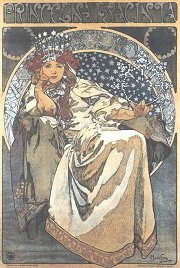

Obsah
Prokletí básníci
Impresionismus
Dekadence
Symbolismus
Civilismus, vitalismus, unanimismus
Anarchisté a buøièi
+ S.K.Neumann
+ Fráòa Šrámek
+ F.X.Šalda

Gaudí: Casa Batlló
|
MODERNÍ UMÌLECKÉ SMÌRY
Kunsthistorik Gombrich charakterizuje 19. století jako dobu „permanentní revoluce“ a „hledání novıch mìøítek“ v umìní. Platí to pøedevším pro poslední tøetinu 19. století a zaèátek 20. století. Epochu umìleckıch slohù, které formovaly celou civilizaci po nìkolik staletí (gotika, baroko...), uzavøel romantismus. Realismus u zasáhl pouze nìkteré druhy umìní a v 70. letech 19. století se zaèínají hlásit o slovo moderní umìlecké smìry jako impresionismus, symbolismus, vitalismus a civilismus, poèátkem 20. století potom fauvismus nebo abstrakce. Patøí k nim také naturalismus, dekadence a secese. Pro uvedené smìry je typické, e ovlivnily pouze nìkteré umìlecké druhy, hlavnì literaturu a vıtvarné umìní. Existovaly paralelnì vedle sebe, take konkrétní dílo mohlo formovat nìkolik „ismù“ zároveò. Øada umìlcù prošla ve svém ivotì nìkolika etapami, ve kterıch kladli dùraz na rùzné umìlecké smìry. Gogh, Cézanne, Gauguin a další postimpresionisté dospìli k originálnímu individuálnímu stylu, kterı pøedurèil další vıvoj umìní.
Moderní (z francouzského moderne, tj. nejnovìjší, souèasnı) umìlci byli zprvu vysmíváni kritikou a publikum nejevilo o jejich tvorbu zájem. Pøesto se rozhodli pro nelehkou cestu hledání nového umìleckého vırazu, kterou doprovázelo strádání, úsmìšky, chudoba i vytìsnìní na okraj spoleènosti (odtud oznaèení prokletí básníci), a nevydali se pohodlnou cestou oficiální akademické tvorby. Historie jim dala za pravdu a dnes jsou právem oslavováni jako prùkopníci moderního umìní.
|
Fin de siècle
Pro duchovní atmosféru fin de siècle (franc. konec století) bylo typické odmítání starıch tradièních hodnot. Dekadenti se odvracejí od skuteènosti a unikají do vysnìného svìta umìní a poitkù. Kolem sebe spatøují jen úpadek a nudu. Centrem moderního umìní byla Francie, kam smìøovali umìlci z dalších evropskıch zemí (Gogh, Mucha, Maeterlinck...). Vìtšina moderních umìleckıch smìrù dostala své jméno v Paøíi. Trochu stranou stály Spojené státy americké, ale i odsud pøicházely vırazné impulzy jako Whitmanùv vitalismus a civilismus.

Hugo Boettinger: Lokomotiva v secesi drená
|
Umìní pro umìní
Gaudí: Park Güell
|
Lartpourlartismus
Termínem lartpourlartismus [-pur-] (z francouzského l’art pour l’art, tj. umìní pro umìní) oznaèujeme tendence, které se zaèaly projevovat v literatuøe druhé poloviny 19. století. Základním principem lartpourlartismu byl kult „èistého“ umìní, které je samo o sobì cílem. Autoøi se soustøeïují na formální stránku svıch dìl a nezajímají se o mimoestetické funkce umìní, napø. spoleèenskou, vıchovnou nebo etickou. Propagátorem tohoto pøístupu k umìlecké tvorbì byl filozof Victor Cousin [kuzen], autor pojednání O pravdivém, krásném a dobrém (1853). Oznaèení „umìní pro umìní“ prı vymyslel Victor Hugo. Za „manifest“ lartpourlartismu je povaována pøedmluva Théophila Gautiera [teofil gotje] k jeho románu Sleèna de Maupin (1834). Podle nìj je tu umìní pøedevším „samo pro sebe“, nejdùleitìjší je krása a její proitek, kterı mùe umìlecké dílo zprostøedkovat. Gautierova programová báseò Umìní, ve které poadoval od básníka pøedevším formální mistrovství, se stala krédem parnasistù. Gautiera obdivoval i Baudelaire a na jeho myšlenky navázali dekadenti. Prokletí básníci jako Verlaine a Mallarmé z tohoto smìru pøímo vyšli, ale brzy se vydali jinou cestou, zcela protikladnou. Stoupenci lartpourlartismu sice pohrdali lùzou a úspìchem a chtìli se obracet pouze ke kultivovanému publiku, ale brzy se stali oficiálními spisovateli a souputníky malíøského akademismu. Jejich popularita a oslavování kritikou zabraòovaly prosazení moderních umìleckıch tendencí.
|
Parnas
Parnas bylo volné sdruení francouzskıch básníkù, kteøí se ztotonili s myšlenkou „umìní pro umìní“. Vùdèí osobností a teoretikem parnasistní školy byl Leconte de Lisle [lil]. Hlásili se k nìmu spisovatelé Banville, Prudhomme, Coppée, Heredia a zprvu také Verlaine nebo Mallarmé. Parnasisté spatøovali ideál v èisté poezii a absolutní kráse. Psali neosobní básnì prosté romantickıch citù, inspirovali se vıtvarnım umìním, mytologií, exotikou nebo minulostí. Souèasné problémy je nezajímaly. Spoleènì vystoupili sborníkem Souèasnı Parnas (1866), u v 70. letech se ale skupina rozpadla. V Èechách pøijal parnasistní estetiku Jaroslav Vrchlickı.
Kterı mıtus se váe k øecké hoøe Parnassos?
|
Individualismus a subjektivismus

Friedrich Nietzsche
|
Individualismus a subjektivismus
Konec století byl ve znamení vypjatého individualismu a subjektivismu. Šlo o pøirozenou reakci na døívìjší pozitivismus, materialismus a snahy o vìdeckost, objektivní a nezaujatı pøístup ke skuteènosti. Novı ivotní postoj pøedjímal u nìmeckı filozof Arthur Schopenhauer (1788-1860), autor pojednání Svìt jako vùle a pøedstava. Tvrdil, e ivot nabízí pouze nouzi, nudu, osamìní, soupeøení a šílenství. Doèasnım vıchodiskem z tìchto strastí mùe bıt umìní, které je vyhrazeno pouze geniálním jedincùm, koneènım pak popøení vùle. Nìmeckı myslitel Friedrich Nietzsche (1844-1900), šel ve svıch dílech Zrození tragédie z ducha hudby, Tak pravil Zarathustra nebo Antikrist ještì dál. Podle nìj je podstatou svìta vùle k moci. Nietzsche odmítá ideály, morálku i náboenství a povauje je za vıplody chorıch lidí a slabochù. Hlásá kult silného individua – nadèlovìka a pesimistickou myšlenku vìèného návratu. Pro vyznavaèe individuality se stal symbolem boje proti konvencím Satan, kterı se dokázal vzepøít samotnému Bohu. Ital Cesare Lombrosi (1836-1909) zdùraznil v knize Génius a šílenství pøínos vıluènıch jedincù, které oddìluje od bláznovství jen krùèek. Proti státu jako hlavnímu utlaèovateli svobodné vùle bojovali anarchisté. Tyto pøevratné myšlenky se setkaly s nadšenım ohlasem pøedevším mezi umìlci.
|

Kupka: Kosmické jaro I
Nietzsche tvrdil, e èlovìk prochází tøemi ivotními etapami – velbloud, lev a dítì. Co je pro nì typické? Ve které z nich se právì nacházíš?
Jak rozumíš Nietzschovım vırokùm „Bùh je mrtev“ a
„èlovìk je provaz nataenı mezi zvíøetem a nadèlovìkem“?
Jmenuj nìjakého génia. V èem spoèívá jeho genialita?
|
Bohéma

Pissarro: Bulvár Montmartre v mlném ránu
Jakı je rozdíl mezi operou, operetou a kabaretem?
|
Bohéma
Pohrdání konvencemi a upjatou morálkou doprovázené neochotou podøídit se zkostnatìlım normám vyvrhlo øadu zapøisáhlıch individualistù na okraj spoleènosti. Zvláštì umìlci zaèali ít nespoutanım bohémskım ivotem a vytváøeli si vlastní pravidla. Bavili se v nevìstincích a dalších pochybnıch podnicích. Upíjeli se v hospodách (zvláštì oblíbenı byl absint, pozdìji zakázanı kvùli negativnímu vlivu na psychiku). Hlásali volnou lásku. Spisovatelé se kvùli otevøenosti, s ní popisovali tento zpùsob ivota, ocitali pøed soudy a jejich díla byla cenzurována a konfiskována z mravnostních dùvodù. Centrem bohémy i neøesti byl paøískı vrch Montmartre nebo Latinská ètvr, kde vznikalo stále více noèních podnikù. Novinkou byly kabarety. K nejslavnìjším patøil literární kabaret Èerná koèka (Le Chat Noire) a Moulin Rouge, kde se tanèil odvánı kankán. Nesmrtelnost jim zajistili hlavnì malíøi, kteøí na svıch plátnech vìrnì zachytili návštìvníky i zamìstnankynì tìchto zábavních podnikù. V polovinì 19. století vzniklá také opereta. Vìnovali se jí Offenbach, Strauss, Lehár, Kálmán, Friml, Nedbal a další hudební skladatelé.
|

Plakát od Toulouse-Lautreca
|
Vıtvarné umìní
Monet: Mùstek v japonské zahradì

Degas: Hvìzda
|
Vıtvarné umìní
Po obnovení obchodu s Japonskem zaèaly do Evropy proudit zdejší døevoøezy a další umìlecká díla, tzv. japonerie, která pøinášela zcela jinı pohled na kompozici a barevnost. Moderní umìlci zaèali nejen pod jejich vlivem hledat nové vırazové prostøedky. Velkou pøekáku pøedstavovala akademická tvorba. Oficiální malíøi mohli od roku 1667 vystavovat svá díla v paøíském Salonu, ale mladé umìlce mezi sebe nepustili. Museli si proto uspoøádat neoficiální vıstavy. Salon odmítnutıch (1874) proslavila díla impresionistù, Salon Nezávislıch (1884) pøedstavil tvorbu postimpresionistù a Podzimní salon (1905) byl ve znamení skandálu s fauvisty. Tyto vıstavy zpùsobily poprask a kritikové z nich byli v šoku. Novı vıtvarnı projev se ale postupnì prosadil. Prùkopníky zmínìnıch moderních umìleckıch smìrù byli malíøi. Auguste Rodin a další sochaøi mìli nejblíe k symbolismu. Architekturu tyto smìry neovlivnily.

Renoir: Moulin de la Galette
|

Manet: Claude Monet maluje na své lodi
Gogh: Kosatce

Gauguin: Mahana no atua
|
Secese

Mucha: Princezna Hyacinta
Vstup do paøíského metra
|
Secese
Secese (z latinského secessio, tj. odchod) byla posledním pokusem o vzkøíšení jednotného slohu. Nazıvala se rovnì Art Nouveau [nuvo], Jugendstil nebo Modern Style. Na pøelomu 19. a 20. století zaèali umìlci bojovat proti úpadku øemesel zpùsobeném tovární vırobou. Secese nejdøíve zasáhla vıtvarné a uité umìní (bytové doplòky, šperky, pøíbory...), záhy se ale rozšíøila také na módu, tanec, divadlo nebo literaturu. Pro secesi byla charakteristická filigránská zdobnost, ornamentálnost, plošnost, dùraz na detail a kvalitní zpracování materiálu. Architekti se odvracejí od historizujících stylù, kombinují sklo s kovem a vyuívají nové jednotící prvky – odváné køivky, elipsy, stylizované rostlinné motivy a dekorativní vızdoba (vitraje, mozaiky). Kromì obytnıch domù vznikají veøejné stavby jako nádraí, v Paøíi potom stanice metra. Vrcholem secese jsou geniální stavby španìlského architekta Antonia Gaudího (katedrála Sagrada Familia v Barcelonì). Vıznamnımi secesními malíøi byli Èech Alfons Mucha nebo Rakušan Gustav Klimt. V Èechách je skvostem secesní architektury praskı Obecní dùm, Jan Kotìra postavil muzeum v Hradci Králové, Ladislav Šaloun Husùv pomník na Staromìstském námìstí a Stanislav Sucharda pomník Františka Palackého v Praze. Secese ovlivnila také kniní kulturu. Velmi oblíbené zaèaly bıt bibliofilské tisky.

Gaudího Casa Milá posmìšnì pøezdívaná Kamenolom
|

Gaudí: Sagrada Familia

Klimt: Polibek
Které secesní stavby znáš?
|
Moderní literatura v Èechách
Bílek: Slepci
Srovnej vıznam slov moderní, módní, moderna, móda, modernismus a modistka.
|
Moderní literatura v Èechách
V Èechách se bìhem 90. let 19. století ustavily tøi hlavní skupiny umìlcù hlásících se k modernímu umìní. Dekadenti Karásek, Procházka nebo Hlaváèek se semkli kolem èasopisu Moderní revue. Nìkolik reformnì orientovanıch knìí vydávalo èasopis Novı ivot, ustálilo se pro nì oznaèení Katolická moderna. Nejvolnìjším uskupením byli signatáøi manifestu Èeská moderna (1895), kterı sepsali Machar a Šalda. Nástup mladıch umìlcù doprovázely bouølivé polemiky s generací ruchovcù a lumírovcù, zvláštì tzv. spory o Hálka a Vrchlického. Modernisty oslovil pouze Zeyer a zahranièní autoøi.
Následující generaci spisovatelù spojovalo v mládí nadšení pro anarchismus, proto bıvají oznaèováni jako buøièi. Šrámek, Gellner, Toman nebo Dyk pøispívali do Neumannova èasopisu Novı kult. K jejich tvorbì mìl blízko i Petr Bezruè.
|

Obecní dùm, námìstí Republiky
Kteøí spisovatelé podepsali manifest Èeské moderny?
Je manifest Èeské moderny spíše umìleckım nebo politickım prohlášením?
Vyber hlavní myšlenky manifestu.
Jakı je názor autorù manifestu na umìní, literární kritiku, spoleènost, vlastenectví a politiku?
Co víš o jednotlivıch signatáøích manifestu?
|
Internetové stránky
Impresionismus
Postimpresionismus
Symbolismus
Klimt, secesní malíø
Rodin, sochaø
Gaudí, architekt
Pokornı: Vídeò 1900, èlánek
Secese
Secese
Secese
Secese
Secese
Exkurze
Secesní Praha
Mucha museum, Praha
Obecní dùm, Praha
Musée Rodin, Paøí
Gaudí, Barcelona

Mucha: Zodiac
|
Doporuèená èetba
Absintová panna aneb Smích paøískıch kabaretù, pøel. H.Zahradníèková, Tichá Byzanc, Praha 1997
Básníci paøíské bohémy, Odeon, Praha 1984
Básníci soumraku, Italská poezie pozdní secese, Paseka, Praha 2001
Èeská básnická moderna, Praha 1987
Èapek, Karel: Francouzská poezie a jiné pøeklady, SNKLHU, Praha 1957
Dìjiny èeského vıtvarného umìní, 1890-1938, IV/1, Academia, Praha 1998
Dùvìrnı prostor, Nová dálka, Umìní praské secese, Enigma, Praha 1997 (katalog k vıstavì)
Fischer, Jan O. a kol.: Dìjiny francouzské literatury 19. a 20. století, 1. a 2. díl, 1789-1870-1930, Academia
Kouba, Pavel: Nietzsche, Filosofická interpretace, Èeskoslovenskı spisovatel, Praha 1995
Kšicová, Danuše: Secese, Slovo a tvar, Masarykova univerzita, Brno 1998
Lamaè, Miroslav: Myšlenky moderních malíøù, Odeon, Praha 1989
Marek, Jaroslav: Èeská moderní kultura, Mladá fronta, Praha 1998
Mrázovi, Bohumír a Marcela: Secese, Obelisk, Praha 1971
Mucha, Jiøí: Alfons Mucha, Mladá fronta, Praha 1994
Neznámı Parnas, pøel. J.Pokornı, Praha 1988
Nezval, Vítìzslav: Moderní básnické smìry, Èeskoslovenskı spisovatel, Praha 1989
Nietzsche, Friedrich: Antikrist, pøel. J.Fischer, Votobia, Olomouc 2001
Nietzsche, F.: Tak pravil Zarathustra, pøel. O.Fischer, Votobia, Olomouc 1995
Osm básníkù z Belgie, SNKLHU, Praha 1958 (Verhaeren, Maeterlinck...)
Pijoan, José: Dìjiny umìní, 8. a 9. díl, Odeon
Poezie pøelomu století, Praha 1984
Pytlík, Radko: Na pøelomu století, Èeskoslovenskı spisovatel, Praha 1988
Schopenhauer, Arthur: Svìt jako vùle a pøedstava, pøel. M.Váòa, Nová tiskárna, Pelhøimov 1998
Strohsová, Eva: Zrození moderny, Praha 1963
Wittlich, Petr: Èeská secese, Odeon, Praha 1985
Zerbst, Rainer: Antoni Gaudí, Taschen, 1993
|
Vypracuj písemnı referát o nìkteré z uvedenıch knih.

Muchùv plakát k pøedstavení Sarah Bernhardtové v roli Hamleta
|
|